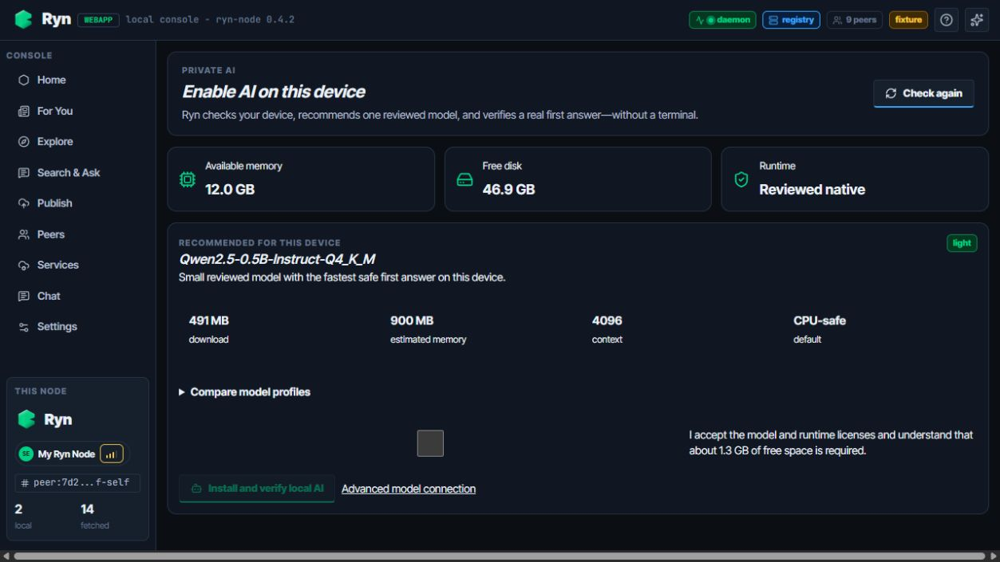
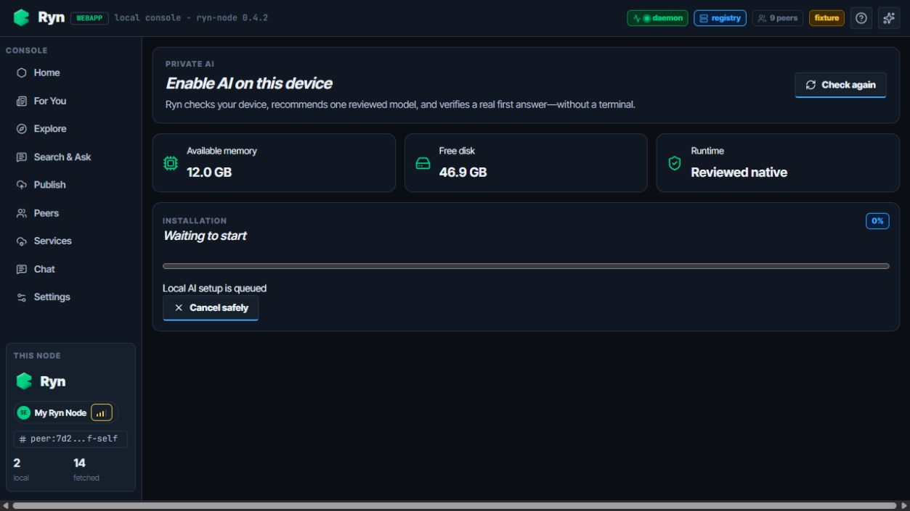
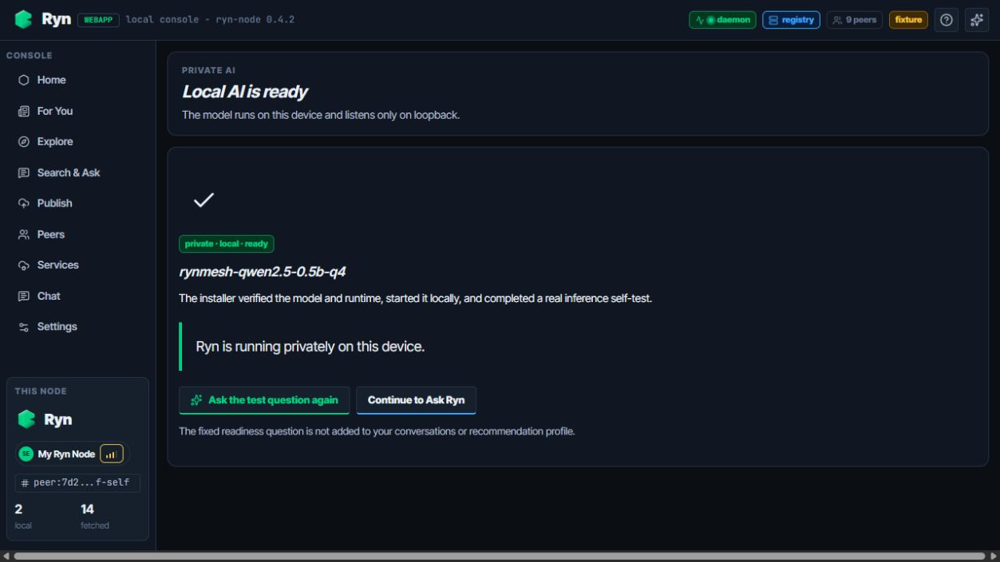

DEV-02 · 一键启用本地 AI
截图来自本地 fixture UI 契约验收；Windows 原生运行时另有物理自检记录。

1
2
3
1
先显示保守内存、磁盘与受管运行时支持状态。
2
默认只突出一个已审核 light 档位；未发布档位不可误选。
3
许可证与空间确认前安装按钮保持禁用。
状态 A：设备检测 → 推荐 → 明确同意。

1
2
1
展示 backend 的真实 stage、百分比和字节进度，不使用假动画。
2
仅在 `cancelable=true` 时允许安全取消；失败后提供 retry/resume。
状态 B：版本化安装任务与恢复控制。

1
2
1
只有摘要校验、loopback 启动、health 和真实推理自检全部成功才显示 ready。
2
用户可直接取得第一次回答；固定测试问题不进入会话或推荐画像。
状态 C：真实 readiness 与第一次回答。